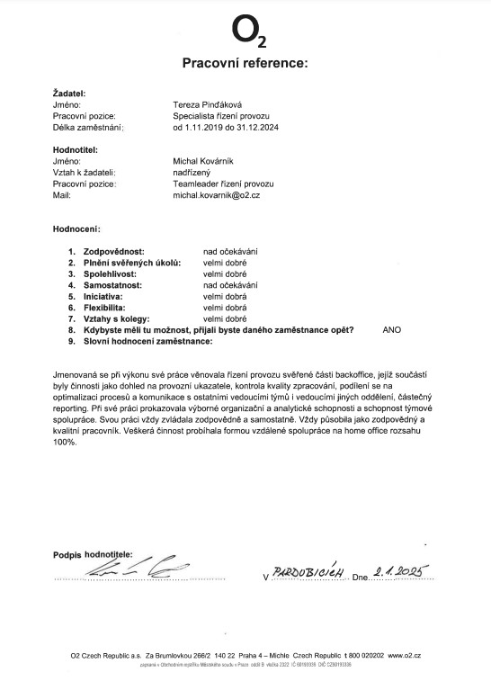
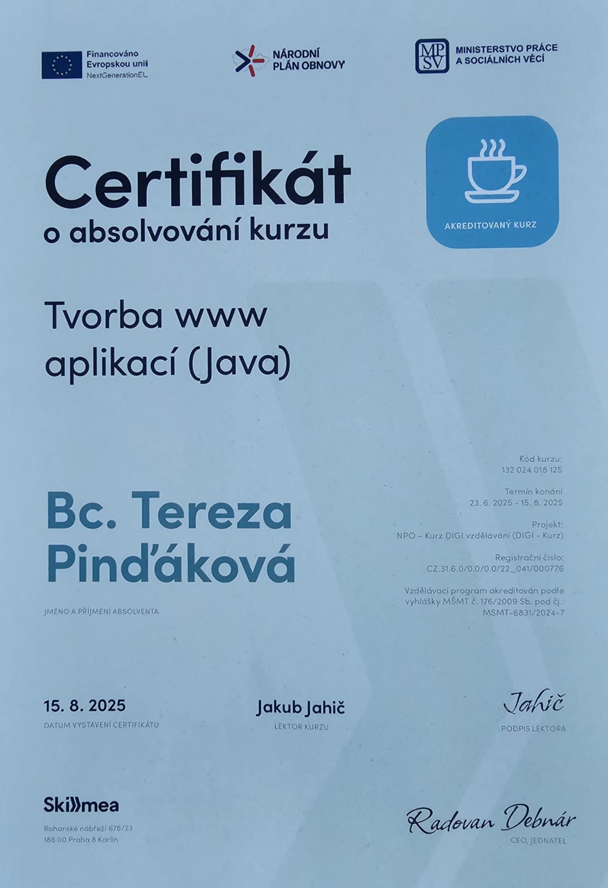
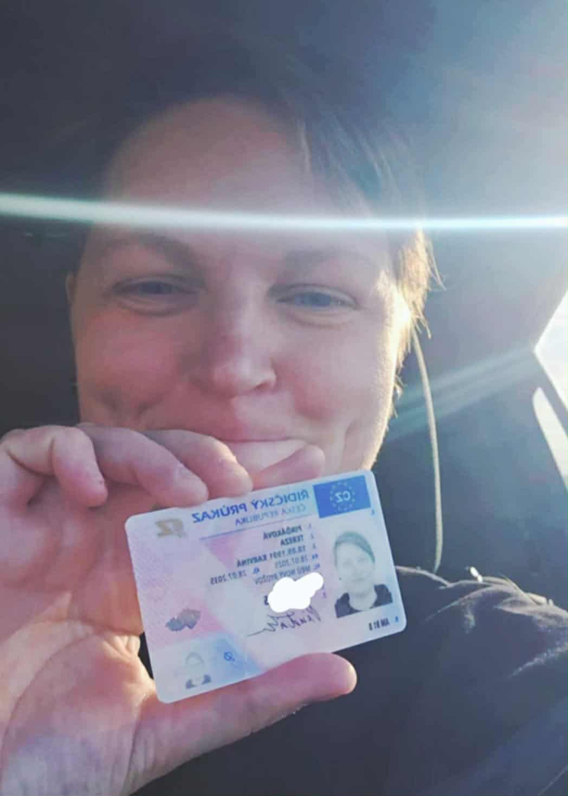

Vítejte. Těší mě, že se zajímáte o můj příběh a práci.
{kind=link}
Kdo jsem a kým chci být
Našla jsem se ve frontendu! Spojení logiky a kreativity je pro mě to pravé a jsem ráda, že jsem to konečně objevila.
Jako esteticky založený člověk miluju barvy, design, ale taky jednoduchost a nepřeplácanost. S levou mozkovou hemisférou pak analyzuji a zkoumám, jak webovky fungují a hledám, co se dá vylepšit.
Efektivita je pro mě důležitým aspektem v celém životě, jak pracovním, tak osobním.
V současnosti se učím a zlepšuji tvorbou vlastních projektů a hledám příležitost jako Junior Frontend Web Developer.
„V životě je důležité, aby věci dávaly smysl, jinak jsou zbytečné.“
Tyto kroky přede mnou udělalo už spoustu lidí, nic nového jsem zatím nevymyslela. Můžu se ale porovnávat jen sama se sebou, ne s někým, jehož cesta je úplně jiná.
Učím se, baví mě to a zkoumám, co se dá. Během tří měsíců jsem vytvořila pět vlastních projektů, které jsem si kompletně vymyslela sama.
A i když nejsou dokonalé, na každém z nich se učím a posouvám dál. To je to, co mě odlišuje a to, co mě opravdu baví.
Jak pracuji
Nejlépe se učím prakticky. Tvořením. Každý projekt je pro mě příležitostí vyzkoušet nové postupy, otestovat nápady a naučit se něco nového.
Nyní si jsem svým vlastním zadavatelem projektů i testerem. Mám ráda projekty v celistvé podobě, proto často tvořím vícestránkové weby místo jednotlivých jednoduchých stránek.
Hodím se však skvěle i do týmu, kde aktivně přispívám v diskuzích a při brainstormingu, kladu otázky, které pomáhají odhalit slabiny návrhů a najít lepší řešení, a zároveň přicházím s vlastními nápady.“
Jako pomocníka používám ChatGPT, který považuji za dobrý nástroj, i když vím, že není bezchybný, proto ho „drtím“ otázkami, proč a jak věci fungují.
Zkušenosti z mých předchozích prací mi pomohly rozvíjet logické myšlení díky nespočtu analýz a hodinám stráveným v Excelu.
Učím se z chyb, umím si dát zpětnou vazbu, přizpůsobuju se a pracuji efektivně.
Vím taky, jak a kam se chci posouvat dál.
Nástroje a technologie
V každé práci jsem se musela rychle naučit pracovat s novými systémy. Ať už to byly interní programy úřadu práce, účetní software nebo firemní systémy v O2. Tato zkušenost mě naučila nebát se nových technologií a rychle se v nich zorientovat.
Při certifikaci na webové aplikace jsem se seznámila s Javou, ale už v polovině kurzu jsem věděla, že samotný backend pro mě není ta správná cesta. Nicméně jsem se naučila základy syntaxe, logiky programování, OOP a práci se softwarem IntelliJ IDEA.
V současnosti se zaměřuji na frontendový vývoj. Pracuji ve Visual Studio Code, využívám Adobe Photoshop pro grafiku, Google Console pro ladění a různé online nástroje pro práci s barvami, ikonami a efekty.
Ovládám HTML a CSS, aktivně se učím JavaScript a postupně přecházím k frameworkům.
Učení beru jako nikdy nekončící proces. I teď, když čtete tyto řádky, už pravděpodobně umím něco, co jsem včera ještě nevěděla.
Reference a úspěchy
Každý krok, který udělám mě posouvá o něco dál, ať už profesně nebo osobně. Níže najdete pár z nich, které pro mě měly v poslední době největší význam.
-
Doporučení z minulé práce
Pracovní posudek od přímého nadřízeného ze společnosti O2 Czech republic.
 -
Certifikát Java Web ApplicationsW
Získaný v roce 2025 v rámci rozšiřování znalostí programování. I když jsem nakonec zamířila k frontendu, kurz mi pomohl pochopit logiku vývoje aplikací.
 -
Řidičský průkaz
Konečně jsem si udělala řidičák. Pro někoho samozřejmost, pro mě krásný nový úspěch.

{kind=link}
{kind=link}
{kind=link}
Můj příběh ve zkratce
Po absolvování bakalářského studia na Obchodně podnikatelské fakultě Slezské univerzity jsem nastoupila na Úřad práce, kde mě brzy frustrovala nadbytečná byrokracie. Následně jsem pracovala jako účetní, ale ani tato pozice mi nenabízela dostatečnou výzvu. Po třech letech mě opakující se procesy a omezené možnosti rozvoje přiměly hledat nové směry. V té době jsem se seznámila s partnerem a společně jsme se přestěhovali do Pardubic, kde začala nová kapitola mé kariéry. Nastoupila jsem do O2, kde jsem pět let zefektivňovala procesy, řídila jejich zpracování, poskytovala zpětnou vazbu na nové nápady a komunikovala s kolegy napříč různými týmy a odděleními. Po pěti letech jsem cítila, že kariérní růst a seberealizace jsou nedostatečné. Nakonec jsem svou pozici ztratila kvůli nadbytečnosti, kdy procesy byly natolik zautomatizované, že mé pracovní místo zaniklo. Po pečlivém zvážení dalších možností mě zaujala oblast IT, která mě nadchla svou logikou, dynamikou a kreativní stránkou, jež jsem objevila při tvorbě webových stránek.
My kind of world
Kromě webových projektů maluji akvarelem, akrylem nebo prostě jen tak čmárám, ale taky vytvářím grafiku z linorytu ve spojení s akvarelovými malbami. Miluju cestování a objevování nových míst, a také jejich fotografování.
Tudy můžete nahlédnout do mé osobní tvorbyJsem filmový a seriálový nadšenec a gamer. Miluju deskovky a ráda se zúčastním pěkné únikovky. Nejvíce mě naplňuje příroda a hudba. Často mě tak potkáte na nějakém festivalu nebo koncertu rockové/metalové/punkové… hudby.
„Děkuji, že jste dočetli až sem. Budu ráda, pokud se se mnou spojíte, pokud Vás zaujaly mé zkušenosti a portfolio.“
„Vím, že se mám ještě spoustu co učit a vůbec se toho nebojím!“